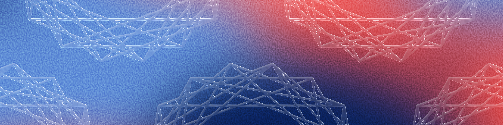

Chcielibyśmy serdecznie zaprosić Państwa na X edycję konferencji kognitywistycznej “Zderzenia Poznawcze” organizowaną przez studentów kognitywistyki na wydziale Filozofii Uniwersytetu Warszawskiego.
„Zderzenia Poznawcze" to coroczne wydarzenie, które wieńczy wielomiesięczne projekty badawcze prowadzone przez studentów kognitywistyki, psychologii, filozofii Uniwersytetu Warszawskiego. Stanowi również okazję do prezentacji wyników badań kognitywistycznych pochodzących z całej Polski. To jednak o wiele więcej niż akademicka prezentacja - to żywe laboratorium idei, gdzie filozofia zderza się z neuronauką, a psychologia ze sztuczną inteligencją.
Celem wydarzenia jest integracja osób związanych z kognitywistyką w całej Polsce, warto więc przyjść nie tylko po wiedzę, ale także po kontakty, polemiki i inspiracje do własnych badań.
Wstęp jest wolny, a konferencja odbywa się na Krakowskim Przedmieściu 3, w samym sercu Warszawy, między kawiarniami a Starym Miastem. Można wpaść na godzinę albo zostać na cały dzień. Można słuchać w skupieniu albo zadawać trudne pytania. Jedyne czego oczekujemy to ciekawość i otwartość na najnowsze, studenckie badania kognitywistyczne.
Nie możemy się doczekać naszego spotkania 16-17 maja 2026 na Wydziale Filozofii UW!
We would like to invite you to the 10th edition of the ”Cognitive Collisions” conference, organised by students of Cognitive Science at the Faculty of Philosophy, University of Warsaw.
"Cognitive Collisions" is an annual event that crowns months of research projects carried out by students of Cognitive Science, Psychology and Philosophy of the University of Warsaw. The conference is an opportunity to present research about Cognitive Science from all around Poland. It is, however, much more than an academic presentation of completed work - it is a living laboratory of ideas, where philosophy collides with neuroscience, and psychology meets artificial intelligence.
The aim of the event is to bring together people connected to cognitive science from across Poland. It is therefore worth attending not only for the knowledge, but also for the connections, debates, and inspiration for your own research.
Admission is free, and the conference takes place at Krakowskie Przedmieście 3 - in the very heart of Warsaw, right between cafés and the Old Town. You can drop in for an hour or stay for the whole day. You can listen attentively or ask tough questions. Curiosity and open-mindedness about recent academic cognitive research are the only things you need.
Can’t wait to see you on the 16th and 17th May 2026 at the Faculty of Philosophy of the Warsaw University!
Zakończyliśmy nabór abstraktów. W tym roku wpłynęła do nas rekordowa liczba zgłoszeń na wystąpienia i plakaty na naszej konferencji! Bardzo się z tego powodu cieszymy i chcemy gorąco podziękować za tak ogromne zainteresowanie!
Do zobaczenia na Konferencji!
The abstract submission period has closed. This year, we received a record number of submissions for presentations and posters at our conference! We are thrilled and would like to sincerely thank you for your overwhelming interest!
See you at the Conference!
Wydział Filozofii UW
Krakowskie Przedmieście 3
